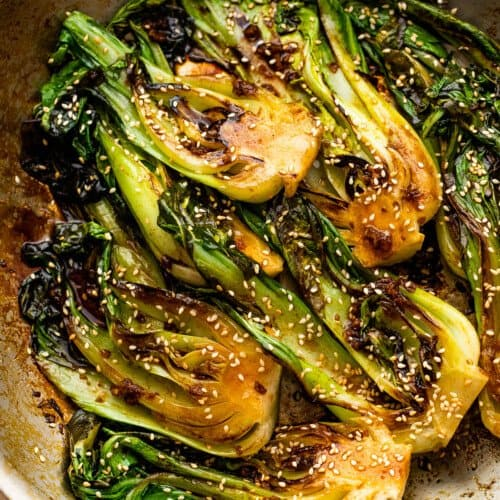

Garlic Bok Choy Stir-fry

You just can't go wrong with this dish.
There are trusted and reliable constants in life and we all have our own lists. If I don't have a specific meal base in mind, I probably always have some rice nearby. If I'm buying a chocolate it's probably snickers. And, whether I need to throw together a quick MRE or conjure a soulful toe-curling meal I can always rely on a Garlic Bok Choy Stir-fry. This one is gonna be alchemical, Prepare your a.s.s.s's (asses).
Ingredients
- Bok Choy
- Garlic cloves chopped
- Soy sauce
- Sesame seed oil
- Red Pepper chili flakes
- Olive oil (in case you don't want to use up your precious sesame)
Steps
- We want individual Bok Choy stalks so if yours are clumped together (which they probably are) its time to split them. Cut off central stem, throw thataway, break off and wash individual stalks.
- God I love high heat... PAN -> STOVE -> BLAZING FIRE. In that pan we want to pour in some sesame seed oil and soy sauce(and you can mix in some olive oil if you like)
- Chopped garlic in! Cook for 30s until fragrant UwU.
- It's BOK CHOY TIME! IM BOK CHOYING!!! Queue the holy music, put on your goggles and gloves and gently rest the bok choy stalks in the popping, molten, fragrant oil.
- Cook on one side till its browned, then flip.
- If your cooking for more than 10 minutes you've created the dubious meal from Legend of Zelda and burnt it Look... JK YOU CAN't GO WRONG WITH THIS DISH!
Back
{kind=link}